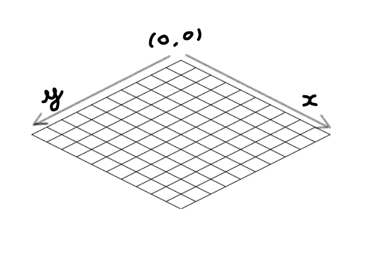

Paramètrage
Au lancement du logiciel, une première fenêtre apparaît, elle permet de configurer la scène:

Différentes options sont disponibles:
- Configuration du Canvas
Hauteur: Hauteur du canvas en pixels
Largeur: Largeur du canvas en pixels
- Configuration de la grille
Nombres de cases en x et y: Le point d'origine de la grille (0,0) est celui d'en haut (voir exemple ci-dessous)

- Configuration des cubes
Choissisez la taille des cubes: Taille des cubes en pixels
Utilisation
Au lancement de la scène avec vos propres paramètres, une grille apparaît, une prévisualisation est disponible lors du survol de la souris sur la grille ou sur un cube.
Bindings
Clic gauche: Place un cube
Clic droit: Selectionne un cube (Il sera colorié en rouge)
Ctrl-Z: Annule le dernier placement (Il faut avoir placé un cube)
Ctrl-N: Crée une nouvelle scène vide
Ctrl-O: Ouvre un projet à partir d'un fichier
Ctrl-S: Sauvegarde la scène actuelle dans un nouveau fichier (Il faut avoir placé un cube)
Ctrl-E: Exporte la scène au format SVG (Il faut avoir placé un cube)
Ctrl-V: Active/Désactive la prévisualisation des cubes
Ctrl-C: Outil de modification de la couleur des prochains cubes placés
Alt-F4: Quitte l'application
Flèches directionelles: Déplacer un cube selectionné (Voir l'exemple ci-dessous)
Menu Edition
Visualiser: Active/Désactive la prévisualisation des cubes
Couleur: Outil de modification de la couleur des prochains cubes placés
Annuler: Annule le dernier placement (Il faut avoir placé un cube)
Menu Fichier
Nouveau: Crée une nouvelle scène vide
Ouvrir: Ouvre un projet à partir d'un fichier
Sauver: Sauvegarde la scène actuelle dans un nouveau fichier (Il faut avoir placé un cube)
Exporter: Exporte la scène au format SVG (Il faut avoir placé un cube)
Quitter: Quitte l'application